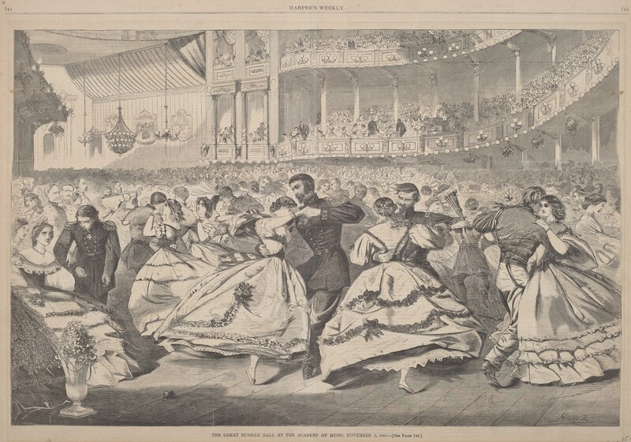
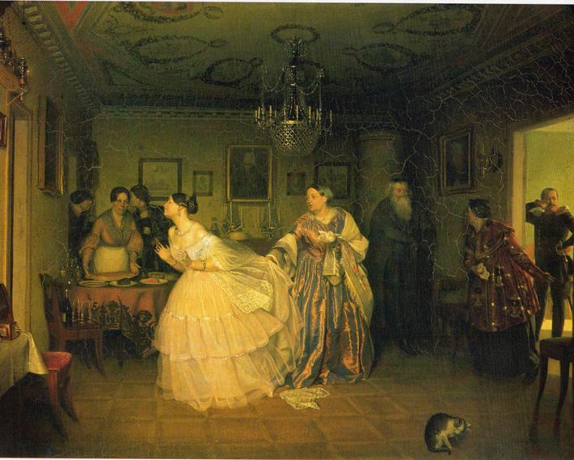

Love

In Anna Karenina, Tolstoy defines love not as a stable, singular, or constantly romantic emotion. Rather, it is a multi-dimensional force, with layers of societal expectations, morality, and internal contradictions. The parallel plots of this novel allow Tolstoy to efficiently contrast the significance of love for Anna and Vronsky and Levin and Kitty. Minor pairings like Oblonsky and Dolly or Varenka and Sergey Ivanovich also illuminate these different forms of love. For Kitty and Levin, love is genuine and authentic, rooted in intimate understanding and connection that transcends superficial attraction. Love here is presented as a beautiful thing that can connect two different spheres of people. It allows for authentic connection—such as when Levin was able to reveal to Kitty his lack of religious piety and his past sexual history—that is very intimate. Their marriage reflects Tolstoy’s ideal of a family dynamic: love is not merely about romantic feelings but can add beneficial change to you as a person.
This ideal is reflected in Rousseau's Emile, or On Education. The domestic sphere preserves the integrity of the "natural man" against the corrupting forces of society. Tolstoy adopts this framework: the stable love of Kitty and Levin's marriage reflects a connection to the "natural order" of a family structure.
By contrast, for Anna and Vronsky, love is presented as influenced by intense feeling and passion. It is not lacking in romantic love but rather lacks this ideal, stable family framework. In other words, they lack not love itself but rather the means to integrate romantic feelings into a stable domestic lifestyle.
Rather than the two of them working to build a shared domestic life, Anna and Vronsky both turn outward. During their stay in Italy, Europe in Part V, Vronsky has this sudden commitment to art—such as an intense desire to make a portrait of Anna—that is very performative. He lacks a genuine artistic vocation compared to Mikhailov, an actual professional. Thus, Vronsky’s artistic ambition is merely a temporary external hobby. As for Anna, she develops this obsessive fear that Vronsky doesn’t love her enough. Particularly in Part VII, Chapters 30–31, she is so absorbed by her jealousy and suspicion of other women that she decides Vronsky is having an affair. This sort of displacement reveals the fragility of a relationship that diverts from a traditional family unit and is based on passion alone.
Another important example is when Anna takes preventative measures to getting pregnant in order to maintain her beauty and allure for Vronsky, while for him, he is dreaming of a family for them. These two examples illustrate how even when two characters profess to and are depicted as being in love with each other, they do not necessarily genuinely love each other. There is a severe lack of true, emotional intimacy and connection between Anna and Vronsky that Tolstoy depicts in comparison to the more authentic love that Kitty and Levin have for each other. While Kitty and Levin, as lovers, can get through challenges (like Levin’s slight crush on Anna, Velovsky) together through communication, Anna and Vronsky’s love is built on secrecy.
This tension between agape (spiritual love) and eros (sexual love) also reflects Tolstoy’s engagement with Ladder of Love as described in Plato’s Symposium. In Platonic thought, love should evolve from physical attraction to higher forms of truth and virtue. Tolstoy imposes additional Christian morality to this belief: the inability to find spiritual reconciliation, such as Anna’s obsessive fixation on Vronsky, will result in existential failure. Anna’s failure demonstrates Tolstoy’s belief of what happens when eros cannot progress into agape.
Tolstoy also develops the idea of complicated love through portraying Kitty’s experience at the ball through vivid detail, where the concept of love is depicted as both a naive illusion and painful reality. At the beginning of the evening, Kitty feels admired and confident in her future with Vronsky. She feels very in love with him. However, her understanding and experiencing of love changes after her observation of Anna and Vronsky together. Vronsky choosing Anna for the mazurka instead of Kitty is a public display of his preference for Anna. By the end of the ball, Kitty is able to still be in love with and yet feel pain because of the one she loves: Vronsky. Here, Tolstoy portrays love as emotionally nuanced and even a bit naive or irrational. This scene at the ball functions as a way to prime Kitty for a more ideal experience of love with Levin later.
Ultimately, Tolstoy presents love as a central mechanism to test and reveal aspects of his characters. Genuine love—exemplified by Kitty and Levin—requires a resemblance to Tolstoy’s ideal family structure. It requires a spiritual morality and truth. Sexual, passionate love—as experienced by Anna and Vronsky—may not lack love, but without the structural stability of an agape love, it will be destructive and catastrophic. Tolstoy frames the concept of love as something whose value depends on the framework in which it operates.

Works Cited
- Plato. Symposium. Translated by Benjamin Jowett, Dover Publications, 1993.
- Rousseau, Jean-Jacques. Emile, or Education. Translated by Barbara Foxley, J.M. Dent and Sons, 1921.
- Tolstoy, Leo. Anna Karenina. Translated by Rosamund Bartlett, Oxford University Press, 2014.